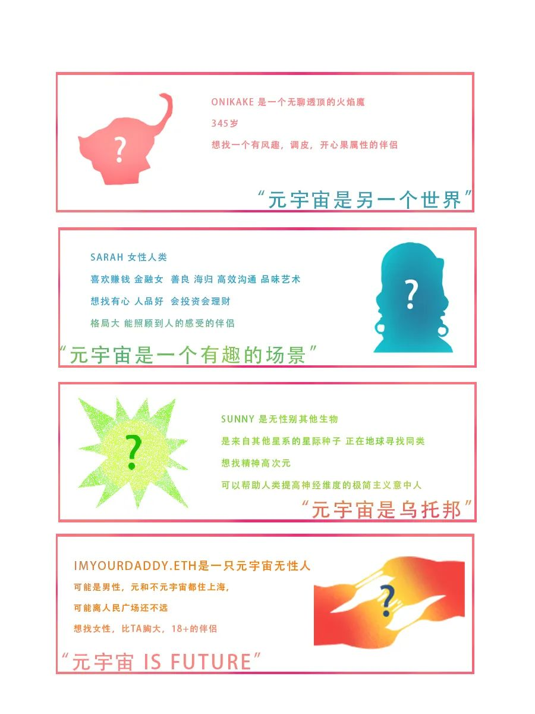

本次活动的——
活动地点（人民广场相亲角）由Shanghai DAO提供；
限量数字藏品由小红书 R-SPACE支持；
AI绘图算法生成由小算法支持；
绘画成品的数字藏品铸造和空投由淘派友情支持。
“种族”？“宇宙”？“世界观”？这好像听起来有点怪，但很快你就会明白——
Shanghai DAO容纳着上海的原住民，也欢迎跨越星际前来定居的旅居者、在星际间漂流的种子、自我认知为男性人类的赛博格，或是不可言状的非生物。只要你怀着和平、友好的信念，Shanghai DAO就欢迎你的到来。
当然，Shanghai DAO也是十分开放的和多元的——跨种族恋爱从来不稀奇。
看到这里，格局是不是已经打开？接下来，让我们来近距离地观察这些“奇形怪状”的家伙们。
本次相亲角活动将出现——这还只是本次活动的一隅。别再观望，别再等待，无需犹豫（我想你早该点开前天的那篇推送并填写了表单！），来体验Shanghai DAO吧——我知道你们在想些什么，来领POAP、来领NFT，再不济，来领个对象回家吧！
当然，当然，我理解你，或许你在想：“真的有人参与吗？这么有趣的灵魂，也会有相亲的需求”？
还未体验和实践Shanghai DAO的异乡人啊（说的就是你，屏幕前的这位），你低估了爱、也低估了元宇宙对爱情的渴望与憧憬。
——怎么，依旧不相信？Shanghai DAO元宇宙人民广场相亲角活动早已打响了它的名号，这里以图为证。
Shanghai DAO的目标是建成横跨各个元宇宙平台的、基于公链的新城市。它从Crypto Voxels开始，但远远不局限于Crypto Voxles。它将横跨Crypto Voxels、Sandbox、Decentraland、Matrix World，以及其他新型的元宇宙平台……在这些分散的元宇宙土地之上，将诞生一个新型的元宇宙城市。出于对上海这座城市的热爱和敬意，我们将其命名为Shanghai。
Shanghai DAO始终相信，未来属于实践者，属于体验者，未来更属于创造者。Shanghai如果没有居民，没有旅行者，便是一座死城。Shanghai DAO看重人与人之间的交互、赛博格与美人鱼之间的交互、吸血鬼与毛绒玩具之间的交互、火焰魔与星际种子之间的交互（小心火源！）、我与你的交互，更看重Shanghai这座元宇宙城市与其体验者的交互。本次活动如此，接下来的活动更是如此。Shanghai DAO的体验，你还不心动吗？
看来气氛已经达到高点，让我再来提醒你一遍：扫描下方海报中的二维码填写表单，进入微信群。快去做，我会盯着你的。
或许你会发现我的语气变化了很多，但我的职责就是如此：介绍清楚游戏规则，也为自己免去磨破嘴皮重复再重复的工作。
这句话可以是对活动的感想，也可以是对相亲成功的对象的内心表白。如果遗憾未能成功在相亲角与有缘人携手，也可以输入你的爱情宣言，大胆示爱。
图像生成后，可以选择其中一幅绘画提交至活动微信群，由你的宣言生成的绘画将成为永恒的数字藏品，永远记录在链上。
注：此玩法在相亲活动全程都可以无门槛参加，AI生成画作也无限制。但一人仅限在微信群内提交一幅画作并制作成为数字藏品。
END